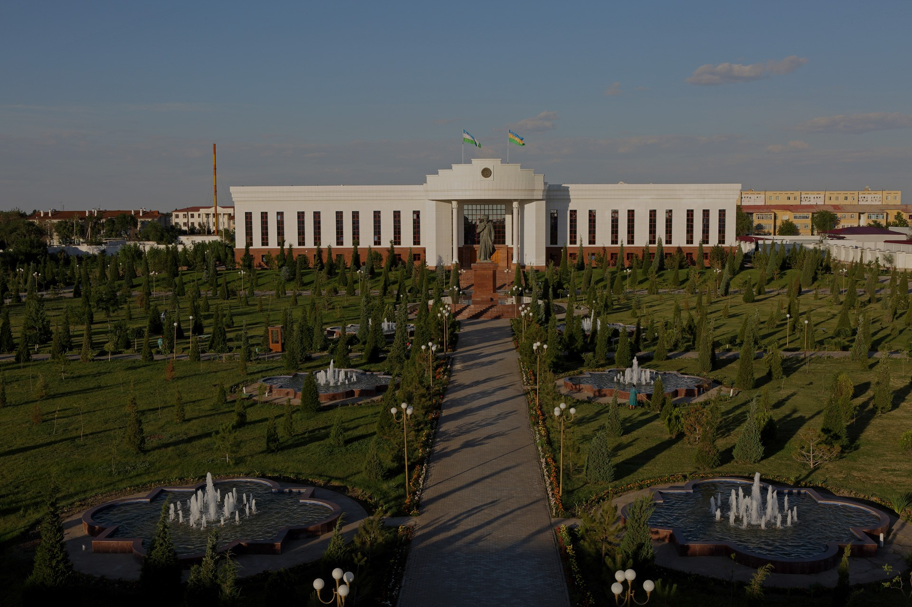

Топовые достопримечательности
Нукус современный, благоустроенный город, в котором можно увидеть памятники архитектуры и современные постройки. Сюда съезжаются любители искусства и искатели приключений, жизнь в городе кипит событиями. Обязательно посетите:
Климат
Жаркий и сухой климат дает возможность растить на территории почти всего Каракалпакстана хлопок, рис и бахчевые культуры. Зима в основном холодная и бесснежная.
Подарки и сувениры
Каракалпакстан всегда славился мастерами прикладного искусства, так как оно развивалось много столетий. Среди общего разнообразия, можно выделить каракалпакский головной убор, называемый «Шогирме». А также традиционные музыкальные инструменты, такие как дутар, гиржек или изобретенные местными пастухами свирель баламан, флейта камыс-най и камышовая дудка дудук.У региона имеются свои собственные отличительные орнаменты, которые наносятся на одежду, ковры, и ткань. Местные ремесленники также не дадут Вам забыть о пребывании на территории этого прекрасного края. Мастера изготавливают прекрасные поделки из дерева, кожи и прочих материалов.
Кухня
Традиционная кухня каракалпаков пересекает в себе кулинарное искусство их многих среднеазиатских стран, таких как Казахстан, Туркменистан, Таджикистан и многих других. Основными блюдами, также как и в других регионах являются плов, манты, самса и конечно же рыба. Рыбу тут готовят по особенным рецептам, поэтому это первое, что Вы должны попробовать находясь в Каракалпакстане. Но в этих блюдах также есть свои особенности ввиду того, что тут люди едят не только говядину и баранину, но и непривычные для иностранца конину и верблюжатину. Широко распространены такие гарниры как картошка, рис, фасоль и прочие овощи и злаковые. Еще больше про Узбекскую Кухню Вы сможете прочитать по этой ссылке.
История
Нукус — это столица Каракалпакстана и один из самых северо-западных городов Узбекистана. Он построен на месте более древнего городища под названием Шурча, который находился на этом месте до IV н.э. По утверждениям археологов, это городище использовалось в качестве оборонительного сооружения, построенного для охраны границы хорезмского государства и водного пути, проходящего по Амударье.Первая версия происхождения названия города «Нукус» произошла от название очень старого каракалпакского рода. Это почти не упоминается в исторических учебниках, но некоторые исследователи утверждают, что слово “Нукус” пришло из персидского корня “нукус”, что переводится как “девять человек”.По второй версии названия произошло от исторического названия реки Амударья – “Oxus”.Статус столицы Каракалпакстана, Нукус получил, 1-го апреля 1932 года, а 11 сентября 2003 года указом Президента город был награжден орденом «Дустлик».